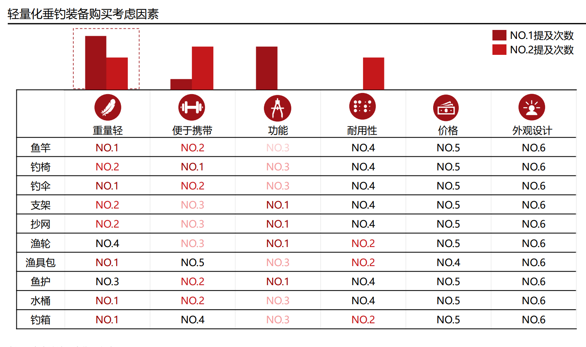
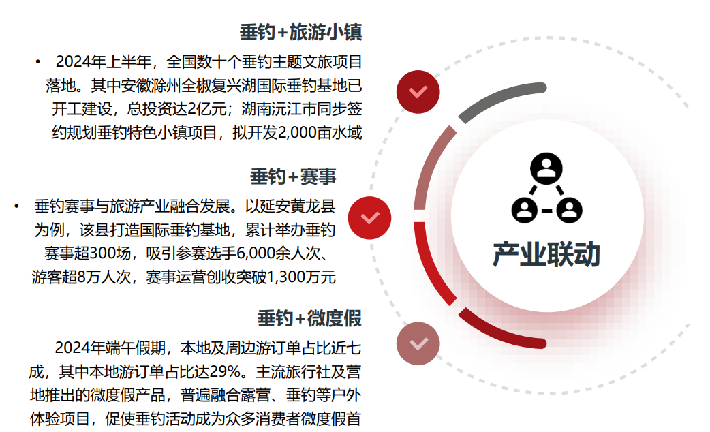
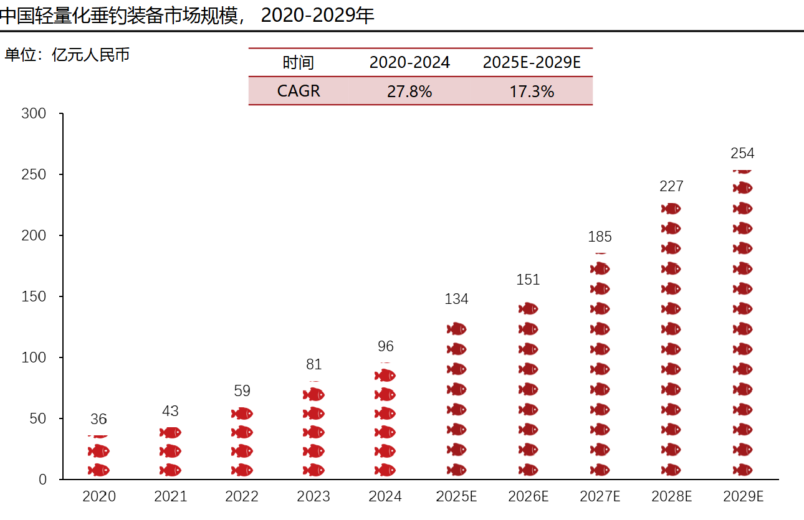

- 合作伙伴
-

跨界融合 伙伴赋能
水生美学-2026微物钓具体验展”深度聚焦轻量化垂钓这一高速增长的新兴赛道，创新打造“垂直细分+跨界融合”的展会新模式。与传统综合钓具展形成差异化定位，我们精准对接轻量化钓鱼市场的专业需求，致力于推动微物钓产业与户外生活方式的创新融合。
-

商贸对接 资源互惠
水生美学-2026微物钓具体验展”深度聚焦轻量化垂钓这一高速增长的新兴赛道，创新打造“垂直细分+跨界融合”的展会新模式。与传统综合钓具展形成差异化定位，我们精准对接轻量化钓鱼市场的专业需求，致力于推动微物钓产业与户外生活方式的创新融合。
-

“轻钓+”新经济模式
本届展会的核心特色是成功整合了旅游出行、露营生活、科技应用和环保产业四大跨界领域：通过实景体验区、专业论坛和跨界洽谈会等多元形式，打造集产品展示、技术交流、商贸对接与场景体验于一体的综合性平台。
本质上，这是一个以小物钓为入口的"户外生活方式"综合平台，致力于推动钓鱼从单一运动向"钓具+场景+内容"的复合型消费体验升级，为参展企业提供精准的资源对接机会，为专业买家呈现创新的产品体验，共同探索小物钓产业在新时代的发展机遇与商业价值。
-

产业链协同与品牌创新共振
业态融合新引擎--微物钓是连接文旅、汽车、露营、时尚、科技等多个行业的超级场景入口。我们为旅游车企提供“车载垂钓”内容，为露营地打造“钓营一体”增值服务，为科技公司提供虚拟与现实结合的体验场景等。
商业新蓝海：本届展会率先构建了一个跨界资源对接平台，让钓具品牌与异业品牌共同探索“轻钓+露营”、“轻钓+文旅”、“轻钓+科技”等的全新商业模式，开辟增量市场。